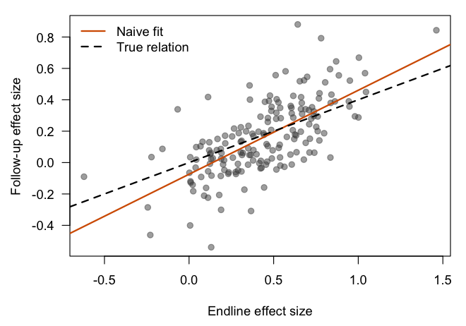

Meta-analyses often ask how much of an intervention’s effect persists by regressing effect sizes at follow-up on effect sizes at endline. The slope, the conditional persistence, is the expected follow-up effect per unit of endline effect: 1 means effects fully persist and 0 means they fully fade.
The endline and follow-up effect sizes usually come from the same participants measured with the same outcome, so their sampling errors are correlated. If a trial’s endline estimate is too high by chance, its follow-up estimate probably is too. Gilbert and Himmelsbach (2026) show that this correlation inflates the naive slope. ghreg fits their correction.
Why the naive slope is biased
Write the observed effect sizes as true effects plus sampling error, , with true effects related by . If the sampling errors are correlated , the least-squares slope of on converges to plus
With this is the familiar attenuation from measurement error in a predictor. For a difference in means with a constant treatment effect, equals the correlation of the outcome across time (its test-retest reliability), which is typically well above zero. When and the two sampling variances are similar, the correlation term wins and the naive slope overstates persistence. A standard errors-in-variables correction, which assumes , makes things worse.
The data
persist_sim is a simulated meta-analysis of 60 studies,
each reporting 1 to 5 pairs of effect sizes. Each pair comes from a
simulated randomized trial of 40 to 200 participants, analyzed by a
difference in means, as in the paper’s simulations. The true conditional
persistence is 0.4, and each outcome’s test-retest correlation
rho varies between pairs (mean 0.67).
head(persist_sim)
#> study es_id n rho es1 se1 es2 se2 theta1 theta2
#> 1 1 1 122 0.94 1.04003591 0.1832851 0.5698169 0.1804904 1.11611689 0.54392255
#> 2 1 2 185 0.79 0.94793789 0.1516928 0.3572056 0.1446045 0.75868717 0.28065970
#> 3 1 3 157 0.68 0.47234900 0.1416333 0.3927445 0.1516318 0.60945632 0.21829911
#> 4 2 4 134 0.48 0.46517414 0.1703457 0.1052195 0.1843777 0.22041278 0.04238971
#> 5 2 5 40 0.40 0.07979173 0.2734992 0.1326023 0.3323364 0.41117555 0.03616169
#> 6 2 6 162 0.69 0.02113377 0.1563018 -0.1415028 0.1491964 0.09026829 -0.03972559The naive meta-regression, the ordinary least-squares slope used in the paper’s simulations, overstates persistence:
plot(es2 ~ es1, data = persist_sim, pch = 19, col = adjustcolor("grey30", 0.5),
xlab = "Endline effect size", ylab = "Follow-up effect size", las = 1)
abline(naive, lwd = 2, col = "#D55E00")
abline(0, 0.4, lwd = 2, lty = 2)
legend("topleft", c("Naive fit", "True relation"), col = c("#D55E00", "black"),
lty = 1:2, lwd = 2, bty = "n")
Observed effect sizes. The dashed line is the true relation (slope 0.4); the solid line is the naive fit.
Fitting the model
gh_reg() takes the endline and follow-up effect sizes
and standard errors, an optional study identifier, and the sampling
correlation rho. Here rho is known because the
data are simulated, so we pass the column:
fit <- gh_reg(persist_sim, es1, se1, es2, se2, study = study, rho = rho,
seed = 2027)
fit
#> Gilbert-Himmelsbach persistence meta-regression
#> 3-level model: 174 pairs of effect sizes in 60 studies
#> Sampling correlation (rho): varies, 0.23 to 0.94 (mean 0.67)
#> Backend: cmdstanr, 4 chains x 1000 draws; 0 divergent transitions
#>
#> # A tibble: 7 × 8
#> term estimate std.error ci.lower ci.upper rhat ess_bulk ess_tail
#> <chr> <dbl> <dbl> <dbl> <dbl> <dbl> <dbl> <dbl>
#> 1 beta 0.334 0.0908 0.149 0.503 1.00 1220. 1624.
#> 2 alpha 0.0139 0.0433 -0.0672 0.103 1.00 1266. 1752.
#> 3 mu 0.444 0.0268 0.391 0.496 1.00 3036. 2288.
#> 4 sd_u1 0.139 0.0290 0.0815 0.196 1.00 3042. 1628.
#> 5 sd_u2 0.0621 0.0221 0.0106 0.104 1.01 1209. 552.
#> 6 tau1 0.161 0.0241 0.116 0.210 1.00 2106. 2258.
#> 7 tau2 0.0580 0.0251 0.00359 0.104 1.00 943. 468.The posterior mean of beta is well below the naive
slope, and its 95% interval covers the true value of 0.4. The other
parameters are
-
alpha: mean true follow-up effect when the true endline effect is 0; -
mu: mean true endline effect; -
sd_u1,sd_u2: between-study SDs of the true endline effects and of the follow-up effects given the endline effects; -
tau1,tau2: the same SDs within studies.
Because the data have several pairs per study, gh_reg()
fit the three-level model. With study = NULL, or one pair
per study, it fits the two-level model in the paper.
Summaries as tibbles
The summary printed with the fit is a tibble, stored in
fit$summary. Its columns follow broom’s naming style:
estimate and std.error are the posterior mean
and SD, ci.lower and ci.upper bound an
equal-tailed credible interval, and rhat,
ess_bulk, and ess_tail are convergence
diagnostics. summary() recomputes it at another interval
level:
summary(fit, ci.level = 0.9, diagnostics = FALSE)
#> # A tibble: 7 × 5
#> term estimate std.error ci.lower ci.upper
#> <chr> <dbl> <dbl> <dbl> <dbl>
#> 1 beta 0.334 0.0908 0.183 0.478
#> 2 alpha 0.0139 0.0433 -0.0547 0.0852
#> 3 mu 0.444 0.0268 0.399 0.488
#> 4 sd_u1 0.139 0.0290 0.0922 0.187
#> 5 sd_u2 0.0621 0.0221 0.0218 0.0965
#> 6 tau1 0.161 0.0241 0.123 0.201
#> 7 tau2 0.0580 0.0251 0.0110 0.0964Posterior draws
The posterior draws are available in the posterior format, which makes other summaries easy. For example, the posterior probability that persistence is below the naive estimate:
draws <- as_draws_df(fit)
mean(draws$beta < coef(naive)["es1"])
#> [1] 0.991Sensitivity analysis when rho is unknown
In real meta-analyses the correlation of outcomes across time is
rarely reported. Gilbert and Himmelsbach recommend treating it as a
sensitivity parameter: refit the model over a range of values and see
how the conclusions change. gh_sensitivity() does this,
reusing the compiled model:
sens <- gh_sensitivity(persist_sim, es1, se1, es2, se2, study = study,
rho = seq(0, 0.9, by = 0.1), seed = 2027)
sens
#> # A tibble: 10 × 10
#> rho term estimate std.error ci.lower ci.upper rhat ess_bulk ess_tail divergences
#> <dbl> <chr> <dbl> <dbl> <dbl> <dbl> <dbl> <dbl> <dbl> <int>
#> 1 0 beta 0.678 0.0831 0.524 0.842 1.00 2220. 2518. 0
#> 2 0.1 beta 0.662 0.0813 0.512 0.831 1.00 1848. 2203. 0
#> 3 0.2 beta 0.641 0.0823 0.481 0.806 1.00 2069. 2315. 0
#> 4 0.3 beta 0.609 0.0809 0.450 0.773 1.00 1673. 2176. 0
#> 5 0.4 beta 0.574 0.0844 0.407 0.740 1.00 1875. 2343. 0
#> 6 0.5 beta 0.527 0.0883 0.352 0.697 1.00 1978. 2254. 0
#> 7 0.6 beta 0.457 0.0951 0.259 0.634 1.00 1257. 1678. 0
#> 8 0.7 beta 0.370 0.0936 0.175 0.547 1.00 1098. 1640. 0
#> 9 0.8 beta 0.281 0.0962 0.0786 0.465 1.00 1370. 1555. 0
#> 10 0.9 beta 0.207 0.0992 -0.00109 0.391 1.00 1420. 1575. 0
Posterior mean and 95% interval for conditional persistence at each assumed sampling correlation. The dashed lines mark the naive slope and the true value.
Assuming corrects only for attenuation, so it gives a larger slope than the naive fit. As the assumed correlation rises, the estimate falls below the naive slope. For these data, the corrected slope is smaller than the naive one for any assumed correlation above about 0.5. Reporting the whole curve lets readers apply their own beliefs about how stable the outcomes are.
sens is a tibble with the same columns as
summary(fit), plus rho and the number of
divergent transitions, so it’s easy to filter, tabulate, or plot with
other tools such as ggplot2.
Options
Study-specific correlations. If reliabilities are known for some outcomes, pass a column (or vector) with one value per pair, as in the first fit above.
Priors. The defaults are the paper’s: normal(0, 1)
for mu, alpha, and beta, and
half-Cauchy(0, 0.5) for all SDs. Change them with
gh_prior():
gh_prior(beta = c(0.5, 0.5), sd_scale = 0.25)
#> Priors for gh_reg():
#> mu ~ normal(0, 1)
#> alpha ~ normal(0, 1)
#> beta ~ normal(0.5, 0.5)
#> tau1, tau2, sd_u1, sd_u2 ~ half-Cauchy(0, 0.25)Backends. Models are fit in Stan through rstan or
cmdstanr. By default ghreg uses cmdstanr when it and CmdStan are
installed, and rstan otherwise; choose with
backend = "rstan" or
options(ghreg.backend = "rstan"). The model compiles once
per machine and is cached, so later fits take seconds. Arguments such as
chains, iter_sampling, and seed
are passed to Stan, and ... passes others (for example
adapt_delta with cmdstanr).
Simulation. gh_simulate() generates
data like persist_sim, which is useful for checking the
method under designs that resemble your own:
set.seed(1)
d <- gh_simulate(n_studies = 200, n = 100, rho = 0.8, beta = 0.3)
coef(lm(es2 ~ es1, d))["es1"]
#> es1
#> 0.5403474
coef(gh_reg(d, es1, se1, es2, se2, rho = 0.8, seed = 1))["beta"]
#> beta
#> 0.3690296By default the simulated studies have no study-level variation
(sd_u1 = sd_u2 = 0), so pairs from the same study are
independent and the data follow the two-level model. To simulate
three-level data, give studies several pairs and set the study-level SDs
above zero:
set.seed(2)
d3 <- gh_simulate(n_studies = 80, pairs_per_study = 3, n = 150, rho = 0.7, beta = 0.5, tau1 = 0.15, tau2 = 0.05, sd_u1 = 0.2, sd_u2 = 0.1)
fit3 <- gh_reg(d3, es1, se1, es2, se2, study = study, rho = 0.7, seed = 1)
summary(fit3, diagnostics = FALSE)
#> # A tibble: 7 × 5
#> term estimate std.error ci.lower ci.upper
#> <chr> <dbl> <dbl> <dbl> <dbl>
#> 1 beta 0.430 0.0611 0.310 0.546
#> 2 alpha 0.0408 0.0355 -0.0284 0.110
#> 3 mu 0.521 0.0279 0.466 0.575
#> 4 sd_u1 0.215 0.0238 0.171 0.264
#> 5 sd_u2 0.119 0.0138 0.0939 0.148
#> 6 tau1 0.149 0.0173 0.115 0.183
#> 7 tau2 0.0381 0.0197 0.00286 0.0750How the model is fit
For pair in study ,
with , , , and . The same links true effects within and between studies.
The study effects and capture clustering of the true effects within studies. The sampling errors of different pairs are assumed independent, even within a study. When a study reports several effect sizes from the same participants, their sampling errors are likely correlated as well, which the model does not account for.
Rather than sampling every latent effect, the Stan program integrates , , and out analytically. Each pair contributes a block and each study a rank-2 correction, handled with the Woodbury identity. The posterior is the same as that of the latent-variable program in the paper’s appendix, but Stan samples only the seven hyperparameters. That makes fits fast and avoids the funnel geometry that causes divergent transitions when sampling error is large relative to .
Reference
Gilbert, J. B., & Himmelsbach, Z. (2026). Why fadeout is (probably) worse than we think: Adjusting for correlated sampling error in meta-analyses of behavioral interventions (EdWorkingPaper No. 26-1394). Annenberg Institute at Brown University. https://doi.org/10.26300/87r9-qm15